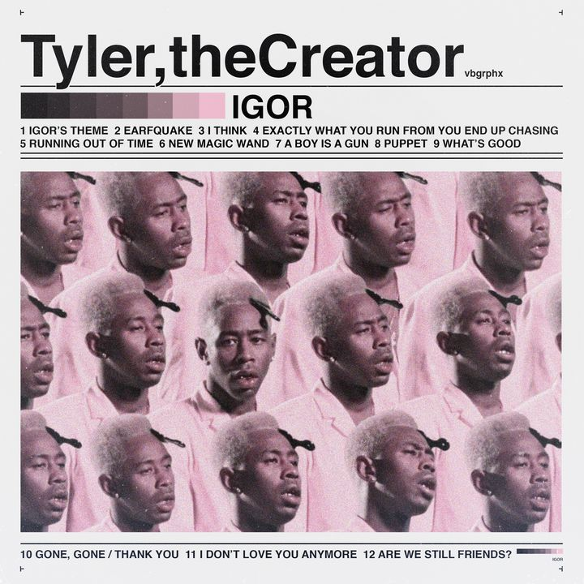

- 1. Igor's Theme (3:20)
- 2. Earfquake (3:10)
- 3. I Think (3:32)
- 4. Exactly What You Run from You End Up Chasing (0:14)
- 5. Running Out of Time (2:57)
- 6. New Magic Wand (3:15)
- 7. A Boy Is a Gun (3:30)
- 8. Puppet (2:59)
- 9. What's Good
- 10. Gone, Gone / Thank You (6:15)
- 11. I Don't Love You Anymore (2:41)
- 12. Are We Still Friends? (4:25)
Who is Tyler the Creator?
Tyler, the Creator was born as Tyler Gregory Okonma in Los Angeles, California on March 6, 1991. He was raised by his mother in the Ladera Heights and Hawthorne Heights sections of L.A. Growing up Tyler, the Creator taught himself how to play the piano and would design his own album covers for existing albums.

What is IGOR
The overall story of Tyler, the Creator's newest album, IGOR, is something many have lived through. You fall for someone. They reciprocate but refuse to go all-in. So you exist in limbo, waiting on them to bring you heaven or send you to hell. Consumed by the lack of closure: you wallow, you hurt, you rage. But. Eventually. You come to your senses and move on.
What is Running Out of Time?
“RUNNING OUT OF TIME” describes Tyler’s fleeting relationship with a significant other and warn them that a split is imminent. Thematically, it introduces tension to the love dynamic previously constructed throughout the album. During Tyler’s Apple Music Concert in L.A, he explained that he showed the album to Kendrick Lamar, where Kendrick praised him about the raw feeling of the album and his overall willingness to ‘sing his truth’. This conversation led him to write this song.

What should you do if you feel like you're running out of time?
Use the search bar above for some neat solutions. Or kick it back and listen to some of Tyler's tunes and figure it out yourself. You'll be fine, good luck.